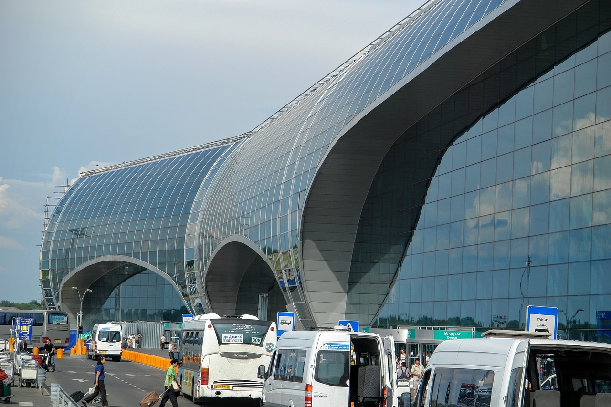

The History

VINCI Airports, concessionaire of 6 airports(1)
in the Dominican Republic since 2016 through its
subsidiary Aerodom, has just been granted by the
Government of the Dominican Republic a 30-year extension
of its concession contract, originally scheduled for 2030.
Under the extended concession contract,
from 2030 to 2060, VINCI Airports will
be responsible for financing, operating,
maintaining, developing and upgrading the
modernization of the airports under concession.
VINCI Airports will notably build and operate a
new passenger terminal at Santo Domingo airport
and continue to implement its environmental action plan,
including expansion of solar power plants and deployment
of wastewater treatment plant as well as waste sorting centers.
An upfront payment of 775 million dollars
(300 million dollars immediately (€273 M)
and 475 million dollars (€432 M)
at financial close in H1 2024)
will be made by Aerodom to the Dominican
state, while the company will also invest
830 million dollars (€755 M) in the airports’
infrastructure throughout the concession period,
including 250 million dollars (€227 M)
for the new terminal to be built in Santo Domingo.

VINCI Airports, concessionaire of 6 airports(1)
in the Dominican Republic since 2016 through its subsidiary Aerodom,
has just been granted by the Government of the Dominican Republic a
30-year extension of its concession contract, originally scheduled for 2030.
Under the extended concession contract,
from 2030 to 2060, VINCI Airports will
be responsible for financing, operating,
maintaining, developing and upgrading the
modernization of the airports under concession.
VINCI Airports will notably build and operate a
new passenger terminal at Santo Domingo airport
and continue to implement its environmental action
plan, including expansion of solar power plants
and deployment of wastewater treatment plant as
well as waste sorting centers.
An upfront payment of 775 million dollars
(300 million dollars immediately (€273 M)
and 475 million dollars (€432 M) at financial
close in H1 2024) will be made by Aerodom to the
Dominican state, while the company will also invest
830 million dollars (€755 M) in the airports’ infrastructure
throughout the concession period, including 250 million dollars
(€227 M) for the new terminal to be built in Santo Domingo.
The consortium made up of Dragados Offshore – a subsidiary of Cobra IS – and Siemens Energy has been awarded by TenneT (the Dutch-German transmission system operator) a contract to design, build and install the three offshore windfarm energy converter platforms in the North Sea. The converter platforms will collect the alternating current generated by several wind farms and convert it into high voltage direct current (HVDC) which will then be reconverted into alternating current at onshore stations approximately 200 km away in the German towns of Wilhelmshaven and Heide. The construction of these converter platforms, each weighing around 34,000 tonnes, will generate more than 2,000 jobs per platform providing workload until 2031. This project is part of Germany's Energy Transition Plan, which calls for the construction of a major offshore wind power generation network. Dragados Offshore was recently awarded six other HVDC projects of the same type.